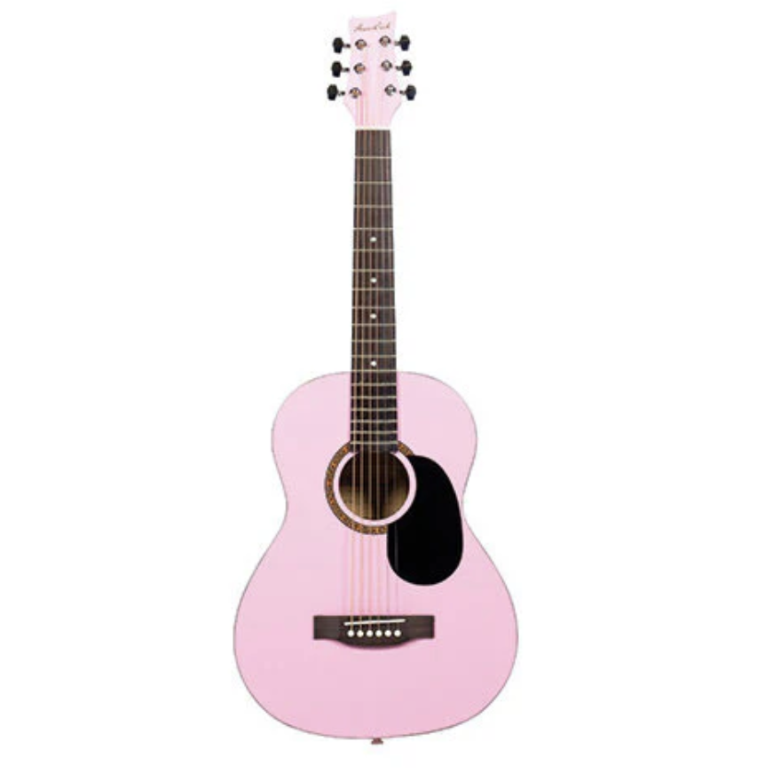

Listening to Music
I really enjoy listening to Jay Chou's music. His mix of traditional Chinese sounds and modern pop makes each song feel special.
Playing Games
In my free time, I occasionally play mobile games like Honor of Kings.
I've recently been playing the Steam game Black Myth: Wukong, which is hard but really fun!
Exploring Nature
Every weekend, I love spending time in nature by walking along the lake or visiting beautiful spots in Seattle. My hike at Snow Lake was amazing and reminded me how refreshing being outdoors can be.
Learning Guitar
have recently taken up learning the guitar, and it has been a great experience. Each practice session brings new challenges, but I enjoy the process of improving my skills. Playing my favorite songs on the guitar gives me a sense of accomplishment and makes me feel more connected to the music.
